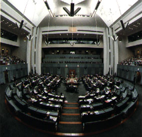

The 'party' we need, to get rid of party politics,
give the people a say in politics,
and give independents a level-playing field in parliament and elections.
We welcome all who wish to advance the cause of real democracy, which demands that the secret ballot decide all elections and all debated issues, to advance the right and the power of the people to take part in, and responsibility for, the government of the nation.
Our sole objective:
The adoption (by referendum) of the secret ballot in our parliaments, to freely elect each minister and determine the outcome of each debate.
By disconnecting our representatives from party power in parliament and reconnecting them to their constituents in local public meetings, this reform has the power to 'change the face of politics'.
For example:
- The end of party-line voting,
- the abolition of party control of its members,
- the removal of the confrontation and angst of party politics,
- objective, efficient, calm debate in parliament,
- the abolition of unwarranted secrecy,
- open government,
- real representation by our representatives,
- regular local meetings by all MPs to confirm their loyalty to constituents.
- a surge in participatory democracy,
- a new unity between people and representatives,
- a real 'government by the people',
- community confidence in the decision-making process,
- much better public policies and outcomes,
- peace, harmony, confidence and strength, nationally,
- an example of real democracy the world badly needs.
-
The secret ballot in our parliaments, will result in:
Membership.
Just spread the word!
For membership - simply apply by email.
more